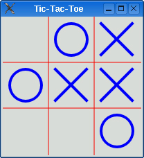
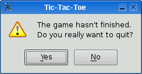

When we log out on X11, some window managers ask us whether we want to save the session. If we say yes, the applications that were running are automatically restarted the next time we log in, with the same screen positions and, ideally, with the same state as they had when we logged out. An example of this is shown in Figure 23.7.

The X11-specific component that takes care of saving and restoring the session is called the session manager. To make a Qt/X11 application aware of the session manager, we must reimplement QApplication::saveState() and save the application's state there.
Microsoft Windows and some Unix systems offer a different mechanism called hibernation. When the user puts the computer into hibernation, the operating system simply dumps the computer's memory onto disk and reloads it when it wakes up. Applications do not need to do anything or even be aware that this happens.
When the user initiates a shutdown, we can take control just before the shutdown occurs by reimplementing QApplication::commitData(). This allows us to save any unsaved data and to interact with the user if required. This part of session management is supported on both X11 and Windows.
We will explore session management by going through the code of the session-aware Tic-Tac-Toe application shown in Figure 23.8. First, let's look at the main() function:
int main(int argc, char *argv[])
{
Application app(argc, argv);
TicTacToe toe;
toe.setObjectName("toe");
app.setTicTacToe(&toe);
toe.show();
return app.exec();
}
We create an Application object. The Application class is derived from QApplication and reimplements both commitData() and saveState() to support session management.
Next, we create a TicTacToe widget, make the Application object aware of it, and show it. We have called the TicTacToe widget "toe". We must give unique object names to top-level widgets if we want the session manager to restore the windows' sizes and positions.
Here's the definition of the Application class:
class Application : public QApplication
{
Q_OBJECT
public:
Application(int &argc, char *argv[]);
void setTicTacToe(TicTacToe *toe);
void saveState(QSessionManager &sessionManager);
void commitData(QSessionManager &sessionManager);
private:
TicTacToe *ticTacToe;
};The Application class keeps a pointer to the TicTacToe widget as a private variable.
void Application::saveState(QSessionManager &sessionManager)
{
QString fileName = ticTacToe->saveState();
QStringList discardCommand;
discardCommand << "rm" << fileName;
sessionManager.setDiscardCommand(discardCommand);
}On X11, the saveState() function is called when the session manager wants the application to save its state. The function is available on other platforms as well, but it is never called. The QSessionManager parameter allows us to communicate with the session manager.
We start by asking the TicTacToe widget to save its state to a file. Then we set the session manager's discard command. A discard command is a command that the session manager must execute to delete any stored information regarding the current state. For this example, we set it to
rm sessionfilewhere sessionfile is the name of the file that contains the saved state for the session, and rm is the standard Unix command to remove files.
The session manager also has a restart command. This is the command that the session manager must execute to restart the application. By default, Qt provides the following restart command:
appname -session id_key
The first part, appname, is derived from argv[0]. The id part is the session ID provided by the session manager; it is guaranteed to be unique among different applications and among different runs of the same application. The key part is added to uniquely identify the time at which the state was saved. For various reasons, the session manager can call saveState() multiple times during the same session, and the different states must be distinguished.
Because of limitations in existing session managers, we must ensure that the application's directory is in the PATH environment variable if we want the application to restart correctly. In particular, if you want to try out the Tic-Tac-Toe example for yourself, you must install it in, say, /usr/local/bin and invoke it as tictactoe.
For simple applications, including Tic-Tac-Toe, we could save the state as an additional command-line argument to the restart command. For example:
tictactoe -state OX-XO-X-O
This would save us from storing the data in a file and providing a discard command to remove the file.
void Application::commitData(QSessionManager &sessionManager)
{
if (ticTacToe->gameInProgress()
&& sessionManager.allowsInteraction()) {
int r = QMessageBox::warning(ticTacToe, tr("Tic-Tac-Toe"),
tr("The game hasn't finished.\n"
"Do you really want to quit?"),
QMessageBox::Yes | QMessageBox::No);
if (r == QMessageBox::Yes) {
sessionManager.release();
} else {
sessionManager.cancel();
}
}
}The commitData() function is called when the user logs out. We can reimplement it to pop up a message box warning the user about potential data loss. The default implementation closes all top-level widgets, which results in the same behavior as when the user closes the windows one after another by clicking the close button in their title bars. In Chapter 3, we saw how to reimplement closeEvent() to catch this and pop up a message box.
For the purposes of this example, we reimplement commitData() and pop up a message box asking the user to confirm the logout if a game is in progress and if the session manager allows us to interact with the user (see Figure 23.9). If the user clicks Yes, we call release() to tell the session manager to continue logging out; if the user clicks No, we call cancel() to cancel the logout.

Now let's look at the TicTacToe class:
class TicTacToe : public QWidget
{
Q_OBJECT
public:
TicTacToe(QWidget *parent = 0);
bool gameInProgress() const;
QString saveState() const;
QSize sizeHint() const;
protected:
void paintEvent(QPaintEvent *event);
void mousePressEvent(QMouseEvent *event);
private:
enum { Empty = '-', Cross = 'X', Nought = 'O' };
void clearBoard();
void restoreState();
QString sessionFileName() const;
QRect cellRect(int row, int column) const;
int cellWidth() const { return width() / 3; }
int cellHeight() const { return height() / 3; }
bool threeInARow(int row1, int col1, int row3, int col3) const;
char board[3][3];
int turnNumber;
};
The TicTacToe class is derived from QWidget and reimplements sizeHint(), paintEvent(), and mousePressEvent(). It also provides the gameInProgress() and saveState() functions that we used in our Application class.
TicTacToe::TicTacToe(QWidget *parent)
: QWidget(parent)
{
clearBoard();
if (qApp->isSessionRestored())
restoreState();
setWindowTitle(tr("Tic-Tac-Toe"));
}In the constructor, we clear the board, and if the application was invoked with the -session option, we call the private function restoreState() to reload the old session.
void TicTacToe::clearBoard()
{
for (int row = 0; row < 3; ++row) {
for (int column = 0; column < 3; ++column) {
board[row][column] = Empty;
}
}
turnNumber = 0;
}In clearBoard(), we clear all the cells and set turnNumber to 0.
QString TicTacToe::saveState() const
{
QFile file(sessionFileName());
if (file.open(QIODevice::WriteOnly)) {
QTextStream out(&file);
for (int row = 0; row < 3; ++row) {
for (int column = 0; column < 3; ++column)
out << board[row][column];
}
}
return file.fileName();
}In saveState(), we write the state of the board to disk. The format is straightforward, with 'X' for crosses, 'O' for noughts, and '-' for empty cells.
QString TicTacToe::sessionFileName() const
{
return QDir::homePath() + "/.tictactoe_" + qApp->sessionId() + "_"
+ qApp->sessionKey();
}The sessionFileName() private function returns the file name for the current session ID and session key. This function is used for both saveState() and restoreState(). The file name is derived from the session ID and session key.
void TicTacToe::restoreState()
{
QFile file(sessionFileName());
if (file.open(QIODevice::ReadOnly)) {
QTextStream in(&file);
for (int row = 0; row < 3; ++row) {
for (int column = 0; column < 3; ++column) {
in >> board[row][column];
if (board[row][column] != Empty)
++turnNumber;
}
}
}
update();
}In restoreState(), we load the file that corresponds to the restored session and fill the board with that information. We deduce the value of turnNumber from the number of X's and O's on the board.
In the TicTacToe constructor, we called restoreState() if QApplication::isSessionRestored() returned true. In that case, sessionId() and sessionKey() return the same values as when the application's state was saved, and so sessionFileName() returns the file name for that session.
Testing and debugging session management can be frustrating, because we need to log in and out all the time. One way to avoid this is to use the standard xsm utility provided with X11. The first time we invoke xsm, it pops up a session manager window and a terminal. The applications we start from that terminal will all use xsm as their session manager instead of the usual, system-wide session manager. We can then use xsm's window to end, restart, or discard a session, and see whether our application behaves as it should. For details about how to do this, see http://doc.trolltech.com/4.3/session.html.